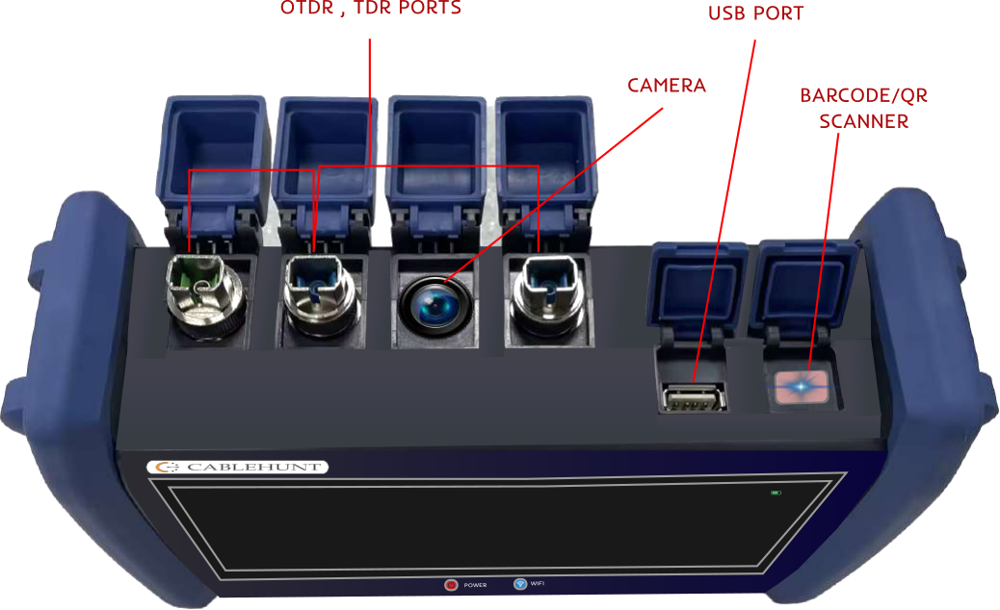
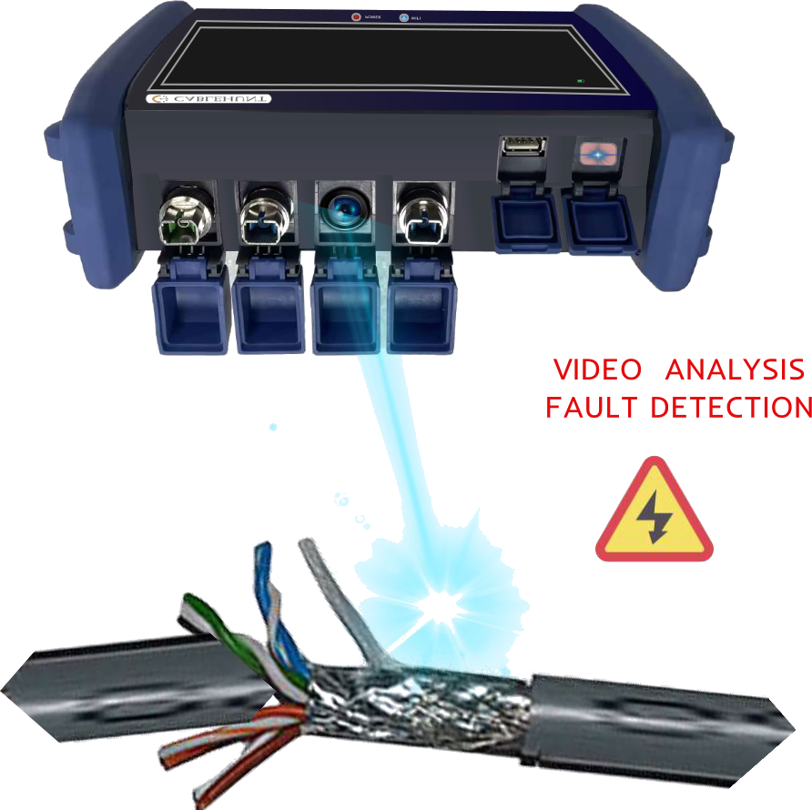
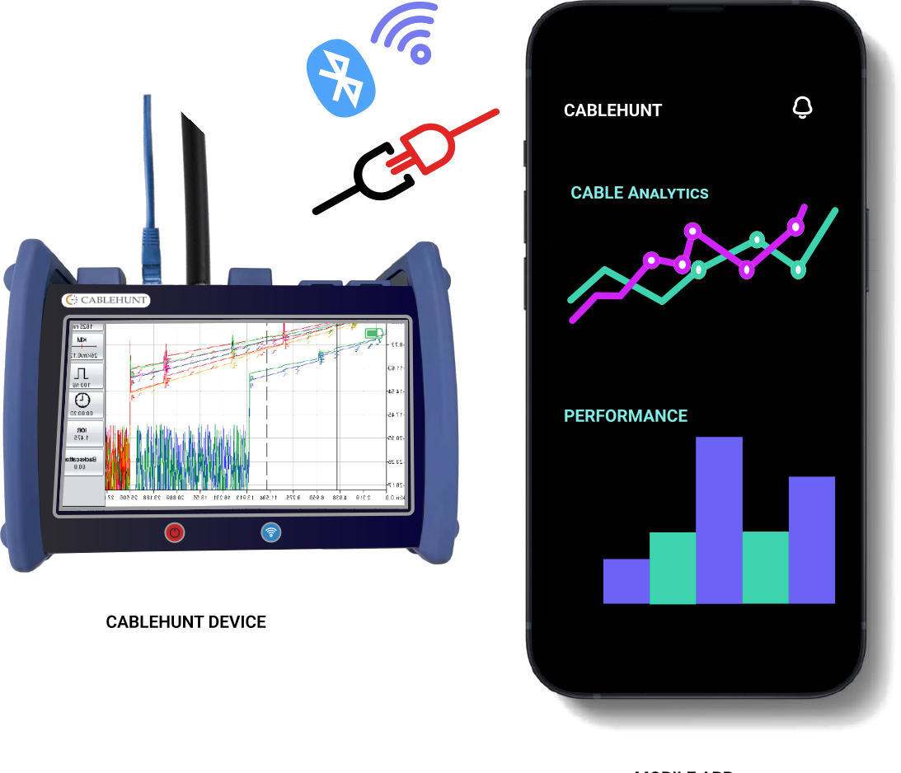
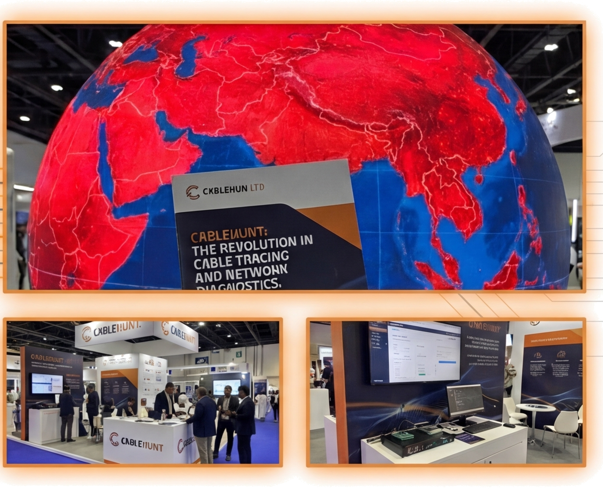

Revolutionising physical-layer network reliability for hyperscale data centres and critical telecommunications infrastructures. Transforming passive testing into active, closed-loop optical self-healing and boosting legacy brownfield links from 1G to 40G without civil excavation.
Why traditional 8-bit OTDRs fail in high-density data centres, and how CableHunt's 4,096-level quantization captures sub-millivolt Rayleigh backscatter anomalies in real time.
16x vertical enhancement enables CableHunt to differentiate between natural glass attenuation slopes and micro-structural decay down to 0.05 dB.
Incorporating a single-mode launch spool shifts initial Fresnel saturation outside the measurement window, isolating ODF patch faults under 0.8 metres.
Powered by isolated 5V/3A DC battery systems, completely eliminating 50Hz/60Hz AC mains ground loops that typically distort sensitive optical front-ends.
An all-in-one industrial diagnostic apparatus combining dual-domain Time Domain Reflectometry (TDR), 12-Bit Optical Time Domain Reflectometry (OTDR), integrated Computer Vision defect inspection, and versatile RF over Fiber (RFOF) testing.

Upper industrial ingress ports featuring dust-sealed flip covers housing single-mode SC/APC and FC/UPC optical interfaces, copper TDR connectors, USB-C diagnostics, and an integrated barcode/QR inventory scanner.

High-definition optical camera module running embedded edge vision algorithms. Instantly identifies external jacket lacerations, improper bend radiuses, loose patch cords, and ODF rack port mismatching.

Seamless pairing with the CableHunt Mobile App. Generates live waterfall transmission patterns, automated event tables with GPS fault coordinate tagging, and cloud sync for rapid field technician dispatch.
Utilising sophisticated image recognition and signal classification, the apparatus automatically adapts its pulse widths, acquisition time, and testing parameters based on the specific type and condition of the cable examined.
By integrating RF over Fiber modulation, a single apparatus tests electrical, coaxial, twisted pair, optical single-mode, and hybrid cables without requiring separate testing sets or third-party adapters.
Engineered to meet stringent fire performance regulations and certified under MICE (Mechanical, Ingress, Climatic, Electromagnetic) standards, ensuring dependable field operation in harsh telecom trenches and server halls.
How CableHunt bypasses multimillion-pound civil excavation costs by modernising legacy brownfield single-mode fibre directly to 40G line rates in software.
Data centres and enterprise campuses in the London Docklands, Slough, and Birmingham corridors are constrained by legacy 1G fibre runs installed decades ago. Traditional upgrades require trenching roads, pulling new high-count ribbon cables, and risking massive service interruptions.
CableHunt combines dynamic chromatic dispersion compensation with out-of-band spectral allocation to safely drive 40G QSFP28 and SFP+ transceivers over existing glass—saving up to 88% of capital expenditures.
Engage directly with our proprietary diagnostic intelligence. Ask in-depth mathematical, architectural, and operational questions regarding 12-Bit native sampling, 40G brownfield upgrades, and Birmingham testbed validation.
Autonomous multi-band wavelength allocation covering the entire ITU-T optical spectrum (1260nm to 1675nm) to dynamically bypass local fibre attenuation peaks.
The CableHunt optimisation engine minimises cumulative physical attenuation, non-linear distortion (Four-Wave Mixing and Self-Phase Modulation), and splice decay across N operational channels:
Subject to: Pmin ≤ Pi ≤ Pmax, λi ∈ [1260 nm, 1675 nm], and OSNRi ≥ OSNRthreshold.
Toggle operating wavelengths to observe real-time attenuation coefficients and automated remediation actions.
From diagnostic detection to active physical remediation: watching CableHunt inject automated Cisco IOS and MikroTik CLI commands over Netmiko in real time.
Unlike conventional monitoring tools that merely sound late alarms when links drop (RX_LOS), CableHunt intervenes programmatically before catastrophic disconnection occurs.
Located in Birmingham, West Midlands, United Kingdom. Pioneering physical-layer experimentation, 80-kilometre launch simulation spools, and real-time DSP validation.
Dedicated multi-drum single-mode fibre arrays (G.652.D and G.657.A1) providing realistic long-haul propagation delays, chromatic dispersion, and Rayleigh backscatter profiles.
Precision optical front-ends coupled to low-noise avalanche photodiodes (APD) and transimpedance amplifiers, capturing micro-reflections obscured by conventional 8-bit OTDR units.
Integrating physical GN/EGN optical models (oopt-gnpy) with live hardware-in-the-loop switches, validating multi-band spectral allocation under simulated traffic saturation.
CableHunt warmly welcomes telecommunications network engineers, data centre infrastructure architects, and photonics researchers to our Birmingham testbed facility for collaborative technical exchange, live hardware-in-the-loop demonstrations, and joint research dialogues. In-person technical sessions are arranged strictly by prior appointment through our executive office.
Showcasing premier British engineering at the world's largest technology expositions in Dubai and across the United Kingdom.

CableHunt participated actively in GITEX Global Dubai, demonstrating its portable 12-bit diagnostic rig and autonomous remediation controllers to thousands of international IT infrastructure and data centre leaders.
Validation continued at the NEC Birmingham Infrastructure Expo, establishing strict compliance with British electrical installation standards and mission-critical life safety links.
Interoperable with tier-1 networking hardware, national telecommunications grids, and enterprise cloud infrastructures.
Seamless integration with 10G/40G SFP+ CRS switch hardware and CableHunt autonomous closed-loop script controllers for sub-50ms optical protection switching.
Engaging tier-1 telecommunications infrastructure contractors operating across Middle East optical grids for live fiber plant diagnostics and high-resolution OTDR validation.
High-density data centre and logistics routing cable diagnostics, ensuring zero latency spikes across mission-critical enterprise autonomous server backbones.
Independent physical-layer engineering surveys and optical infrastructure diagnostic certifications conducted in partnership with leading British engineering survey firms.
Governed under the UK Companies Act 2006 (Company No. 16093071). Headquartered in Mayfair, London.
Leads strategic executive oversight, corporate capitalisation, British commercial compliance, and institutional partnership development across UK and international telecommunications corridors.
Over a decade of hands-on physical network infrastructure experience. Directs hardware manufacturing supply chains, British regulatory compliance, and international field deployment operations.
Academic researcher and systems programmer. Principal architect of the core 12-bit ADC testbed, optical digital signal processing (DSP) pipeline, proprietary spectral optimisation models, and Netmiko switch drivers.
By deploying our adaptive spectral optimisation engine, we dynamically assess physical chromatic dispersion, water peak degradation (E-Band), and non-linear penalties across all ITU-T windows. We then modulate optical power and shift active channels to low-loss windows, enabling 40G QSFP28/SFP+ transceivers to transmit reliably over existing glass without digging or pulling cables.
Traditional field units operate at 8-bit resolution (256 discrete levels), meaning micro-bends, slight splice decay, and transient reflections are drowned in quantization noise. CableHunt's native 12-bit architecture yields 4,096 levels (16x vertical enhancement), capturing sub-millivolt slopes and providing an event dead zone under 0.8 metres.
Our edge controller connects via SSH/NETCONF directly to core switches (e.g. Cisco IE-3000 or MikroTik CRS). When the 1D-CNN classifies an impairment (e.g. a macrobend or laser sag), it injects targeted CLI commands to adjust optical transmit thresholds or reallocate wavelength profiles in less than 50 milliseconds with zero dropped packets.
Connect directly with our Mayfair executive office in London or arrange a technical exchange session at our Birmingham optical testbed facility.
3rd Floor, 45 Albemarle Street, Mayfair, London, W1S 4JL, United Kingdom
Birmingham, West Midlands, United Kingdom